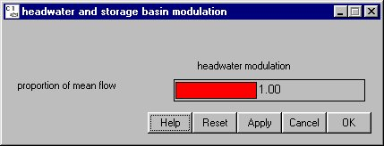

Headwater Modulation: Headwater Flow
Selecting Flow Headwater Modulation opens a window for setting overall water availability in the system relative to an average water year for Scenario Mode runs. Setting the water year level as a proportion of the mean flow and computing flows places modulated flows into all the headwaters. The slider for proportion of mean flow sets the total available water as the fraction of an average water year. The average water year (proportion of the mean flow set to 1) is the total runoff as determined from flows over the 1980's. You can determine how wet or dry the year is during a Scenario run. The proportion of mean flow can be set from 0 (extremely dry) to 2 (extremely wet). This scaling factor applies to all unregulated headwaters.
Headwater Modulation opens a window for setting overall water availability in the system relative to an average water year for Scenario Mode runs. Setting the water year level as a proportion of the mean flow and computing flows places modulated flows into all the headwaters. The slider for proportion of mean flow sets the total available water as the fraction of an average water year. The average water year (proportion of the mean flow set to 1) is the total runoff as determined from flows over the 1980's. You can determine how wet or dry the year is during a Scenario run. The proportion of mean flow can be set from 0 (extremely dry) to 2 (extremely wet). This scaling factor applies to all unregulated headwaters.
Caution. Changing this value causes flows to change, perhaps dramatically, throughout the model.
This is a Slider Input window.

Headwater Modulation window